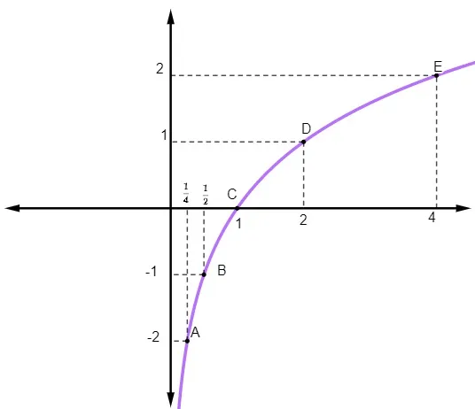
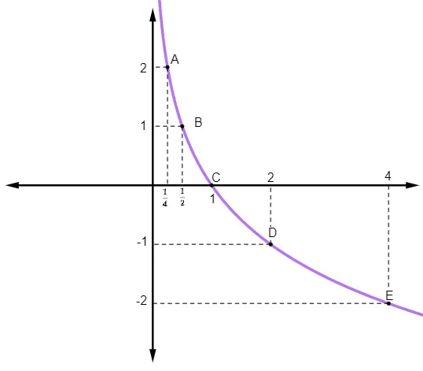

Condições de Existência
Se a base de um logaritmo não for um valor maior que zero e diferente de 1, ou se o logaritmando desse mesmo logaritmo não for um valor positivo, então o logaritmo não poderá existir.
Nomenclatura:
Retas reais que nos mostram a região de valores que a base a e o logaritmando b podem assumir para que sua existência seja garantida:
Logaritmos Especiais
• Logaritmo de Base 10 (Logaritmo Decimal) - não precisa escrever
o 10
na
base;
• Logaritmo de base e (Logaritmo Neperiano ou Logaritmo Natural).
Consequências da definição
• Logaritmo de 1 em qualquer base será sempre zero.;
• Logaritmo com logaritmando e base iguais é sempre
igual a 1.
Propriedades Operatórias
Primeiramente, vamos ver como um Logaritmo é formado:
Na imagem podemos observar termos que compõem um logaritmo:
a é conhecido como sua
base, enquanto o termos b e x são chamados, respectivamente, de logaritmando
e
logaritmo ou resultado da operação
.
O quadro também nos mostra que a
logaritmação é a operação inversa da exponenciação, e isso justifica
as
restrições que os valores de a e b
possuem.
A base a deve ser sempre um valor
maior que zero e diferente de 1, enquanto que o logaritmando b deve ser
necessariamente um valor maior que zero, ou positivo.
Visando isso, vamos conhecer as três propriedades:
1°) LOGARITMO DO PRODUTO:
Em uma mesma base a, o
log do produto de dois números reais e positivos é igual
a soma dos logaritmos desses números.
CUIDADO log 5.2 é diferente de log (5.2).
2°) LOGARITMO DO QUOCIENTE:
Em uma mesma base a, o log do quociente de dois números reais e positivos é a diferença entre esses dois números.
3°) LOGARITMO DA POTÊNCIA:
Em uma mesma base a, o
log da potência de base positiva é igual
do produto do expoente pelo logaritmo da base da potência.
Nós não podemos esquecer que o logaritmo é a operação inversa da exponenciação. Por esse motivo, é muito provável que precisaremos recorrer, às PROPRIEDADES DE POTENCIAÇÃO.
Mudança de Base
Há situações em que logaritmos em bases diferentes precisam ser convertidos para uma única base conveniente, para que possamos aplicar as Propriedades Operatórias.
Isso se aplica caso a e b forem números reais, positivos e se a e c forem diferente de 1.
Funções Logaritmicas e Gráfico
Seja um número real a
( 0 < a ≠ 1 ), chamamos de Função Logarítmica de base a
a função f: ℝ*+ → ℝ, tal que f(x)=logax, sendo:
- x → variável independente;
- f(x) → variável dependente;
- a → base do logaritmo;
Domínio da Função Logarítmica
O domínio é importante para que uma relação entre dois conjuntos seja classificada como uma função. É necessário que o domínio da função seja o conjunto dos números reais positivos e não nulos, ou seja, Df = ℝ*+. Em uma função, todo elemento do domínio deve ter necessariamente uma imagem no contradomínio.
Na representação gráfica da função logarítmica, há dois tipos de comportamento possíveis: ou a função é crescente ou a função é decrescente.
FUNÇÃO CRESCENTE
A função logarítmica é crescente quando à medida que o valor de x na função aumenta, o valor de f(x) também aumenta. Para que isso aconteça, é necessário que a base a seja maior que 1, ou seja, se a > 1 → f(x) é crescente.
EXEMPLO:
f(x) = log2 x → log2 x = y → log2 1/4 = y
Para que possamos montar o gráfico, iremos calcular o valor numérico:
X Y 1/4 f(1/4) = log2 1/4 = −2 1/2 f(1/2) = log2 1/2 = −1 1 f(1) = log2 1 = 0 2 f(2) = log2 2 = 1 4 f(4) = log2 4 = 2
Como a sua base é 2, essa função é crescente, como mostra sua representação gráfica:

FUNÇÃO DECRESCENTE
A função logarítmica é decrescente quando à medida que o valor de x na função diminui, o valor de f(x) também diminui. Para que isso aconteça, é necessário que a base a seja menor que 1, ou seja, se a < 1 → f(x) é decrescente.
EXEMPLO:
f(x) = log(1/2) x → log(1/2) x = y → log1/2 1/4 = y
Para que possamos montar o gráfico, iremos calcular o valor numérico:
X Y 1/4 f(1/4) = log(1/2) 1/4 = 2 1/2 f(1/2) = log(1/2) 1/2 = 1 1 f(1) = log(1/2) -1 = 0 2 f(2) = log(1/2) -2 = 1 4 f(4) = log(1/2) 4 = -2
Representação gráfica:

Conclusões
1) O gráfico da função logarítmica passa pelo ponto (1,0);
2) O gráfico está todo á direita do eixo y;
3) Quando a > 1, a função logarítmica é crescente
;
4) Quando 0 < a < 1, a função logarítmica é decrescente
;
5) Domínio: ℝ*+ (reais POSITIVOS);
6) Imagem: ℝ;
7) A função logarítmica é ilimitada superior e inferiormente.
CLASSIFICAÇÃO: Médio
Sobre
Nesta página site você verá o conteúdo chamado LOGARITMO aprendido pelo Primeiro ano do Ensino Médio Integrado com Curso Técnico em Informática da diciplina de Matemática. Esse conteúdo será classificados em: Fácil, Médio e Difícil.